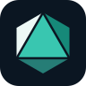

A / Split crystalThe clearest small iconBROWSER TAB / ACTUAL SIZES 16 px 24 px 32 px From Claude Fable 5.2 PhaseSmith Viewer PhaseSmith Viewer A crisp split facet evolves the existing diamond mark.SVGPNGFavicon ICO
B / CoordinationThe strongest crystal identityBROWSER TAB / ACTUAL SIZES 16 px 24 px 32 px From Claude Fable 5.2, refined PhaseSmith Viewer PhaseSmith Viewer An octahedral form puts coordination and facets first.SVGPNGFavicon ICO
C / Unit cellThe most explicitly scientificBROWSER TAB / ACTUAL SIZES 16 px 24 px 32 px Alternative direction PhaseSmith Viewer PhaseSmith Viewer A compact cell and atomic sites echo the viewer itself.SVGPNGFavicon ICO
D / Faceted PThe strongest name connectionBROWSER TAB / ACTUAL SIZES 16 px 24 px 32 px Alternative direction PhaseSmith Viewer PhaseSmith Viewer A geometric P gives PhaseSmith a compact personal mark.SVGPNGFavicon ICO